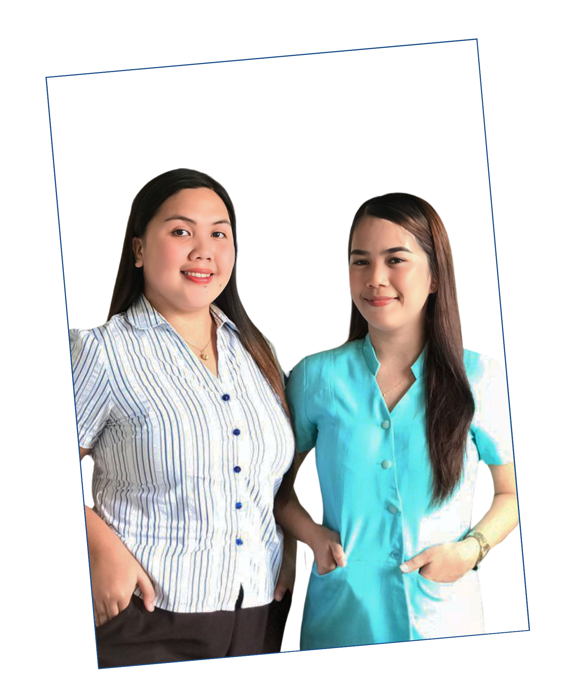

ROSELYN & UNICA
Hey there! I'm Roselyn, and my classmate, Unica, and I make quite the team in the BEED department at URS Angono Campus. While we may not be joined at the hip, our collaboration is definitely something to talk about. I'm all about bringing creativity and attention to detail to the table, while Unica's knack for humor adds a refreshing twist to our study sessions.
Now, if you're navigating our website, start by checking out the "Home" page for an overview of what we're all about. Then, feel free to explore our individual portfolios by clicking on our names, "Roselyn" or "Unica." You'll get to see our unique strengths and contributions firsthand. And hey, don't forget to drop by the "About" section to learn more about our dynamic partnership! So, go ahead, click away, and enjoy the journey through our virtual world of creativity and collaboration!
